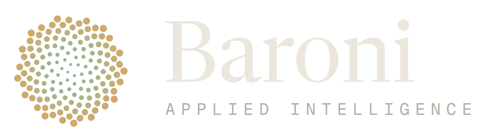

{{label}}
{{headline}} {{headline_gold}}
{{a_tag}}{{a_name}}
{{a_detail}}
{{b_tag}}{{b_name}}
{{b_detail}}
VS
{{verdict_label}}{{verdict}} {{verdict_gold}}

{{footer_note}}1080 × 1350 · Two options side by side, then a verdict in a Forest block.
Fill {{field}} spots. Copy each element between <!-- repeat: name --> markers once per item. Open with ?raw for the untouched template.
{{label}}max 3 words{{headline}}max 3 words{{headline_gold}}max 4 words{{a_tag}}max 2 words{{a_name}}max 2 words{{a_detail}}max 11 words{{b_tag}}max 2 words{{b_name}}max 2 words{{b_detail}}max 13 words{{verdict_label}}max 2 words{{verdict}}max 4 words{{verdict_gold}}max 4 words{{footer_note}}max 3 words